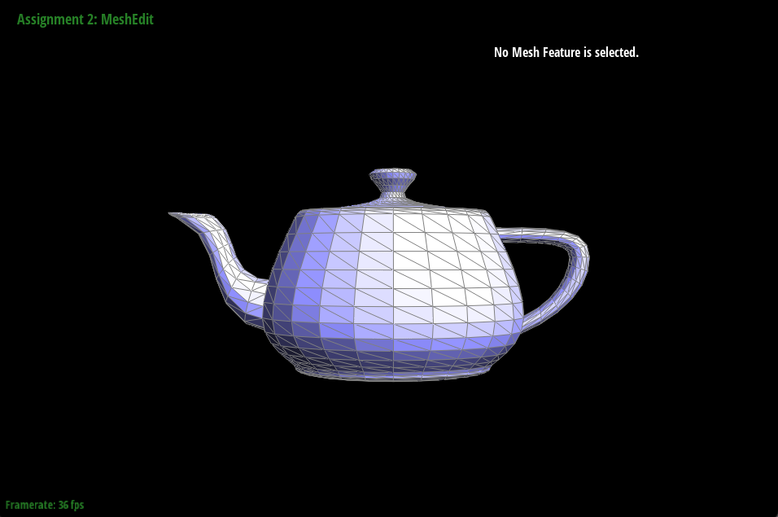
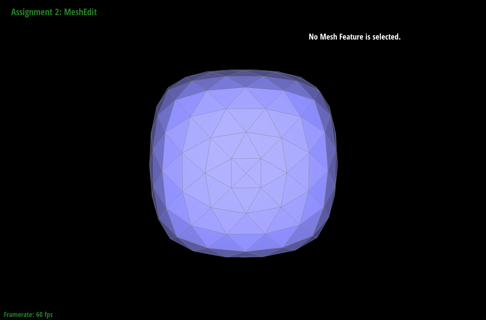

In this project, we implemented geometric modeling and found ways to implement curves and surfaces. In the project, we implemented Bezier Curves, de Casteljau surfaces, area-weighted vertex normals, edge flips and edge splits, and loop subdivision for mesh upsampling.
Given a Bezier curve defined by a set of control points and parameter value, de Casteljau recursively computes intermediate points by doing linear interpolation between adjacent points. For instance, we first interpolate between adjacent control points, then between newly computed intermediate points, so on so forth. When there is only one point, that means we have reached the desired level of accuracy and the algorithm is completed. For this part of the project, we only had to implement the recursive step: we used a for loop to perform linear interpolation between adjacent points and add the calculated point to the list. Once we finish the loop, we return the list of intermediate points.

A Bezier surface is defined by a rectangular grid of control points and parametrized by u and v. It is two dimensional analogous to Bezier curves, so we could reuse the algorithm explained in Task 1 as a subprocess. The application of de Casteljau algorithm is separable by the parameters. First use de Casteljau on each Bezier curve in u defined by each row/set of control points. The list of evaluated points serves as control points for performing de Casteljau on the moving curve in v.
For Task 1, we only implemented the recursive step of the algorithm – evaluateStep. Now, we implemented evaluate1D to complete the algorithm. In the function, we started with calling evaluateStep with the control points passed in. Then, use the result as the new set of intermediate points to pass into evaluateStep. This process is repeated until there is only one evaluated point.
Then we implemented evaluate for Beizer surfaces. For each row/set of control points, we call evaluate1D with u as the parameter and store the results in a list. Lastly, we use that list as the control points and call evaluate1D with v as the parameter.

For this task, we initialized a sum vertex with all 0s as its components and then iterated through all the neighboring triangles. Within each iteration, we calculated the area of the triangle using this equation: 0.5 * cross(vertex_0 - vertex_1, vertex_0 - vertex_2).norm(). Taking the cross product of the vertices (vertex_0 - vertex_1) and (vertex_0 - vertex_2) gives us another vertex (taking a cross product of any two vertices gives another vertex for that matter). In order to get the actual area, we had to take the norm of this vector and multiplied by 0.5. After finding the area, we found the normal vector by taking the cross product of (vertex_0 - vertex_1) and (vertex_1 - vertex_2). Taking the cross product of two vectors A and B gives us a vector that is perpedicular to both A and B, so we were able to get the normal vector this way. Furthermore, the orientation of the normal vector matters; we want the normal vector to point away from the surface rather than pointing in to the surface. Afterwards, we weighted the normal by the area by multiplying the area to the vector, and added the resulting vector to our sum. After iterating through all the neighboring triangles, we normalized the sum vector to get an approximate unit normal vector at the vertex in question.
Original teapot
Phong Shading teapot
To implement Task 4, I drew out a diagram of the mesh before and after edge flip, and labeled the half edges, edges, vertices, and faces. The half edges and faces within the mesh were essentially rotated 90 degrees clockwise with the edge in the middle.

Since there were many tedious assignments of variables, I first created variables for each mesh element and gave them names according to my diagram. Then for each half edge, I set its next, twin, vertex, edge, and face pointers using setNeighbors. For each mesh element, I assign the appropriate half edge after edge flip. I essentially followed the diagram while assigning each pointer.
I initially thought of just flipping the edge in the middle instead of rotating everything. However, that resulted in an infinite loop. I tried adding breakpoints in xcode to examine what went wrong/what caused it, but that was largely unsuccessful since it does execute to the end of the function. I did learn how to evaluate expressions though in the debugger. I saw the post in the megathread and changed my approach and completed this tak. Then I realized my initial attempt did not work because I did not change all of the next pointers that were affected.
Same as Task 4, I also drew diagrams for before and after edge split. I shifted the mesh elements up and created new mesh elements (6 new half edges, 3 new edges, and 2 new faces) for the bottom half.

I created the new vertex and mesh elements that will be used later. Then I assign the position of the new vertex to be the average of the vertice positions of e0. The process of assigning pointers is the same as Task 4; I followed my diagram for each step: set neighbors for half edges and then assign the half edges to the mesh elements.


When I split an edge, one of the outer edges disappeared. I did not “debug” per se using the debugger/by printing. However, I knew it must be related to the code where I use the edges. I went through each line of my code and compared it with my diagram, which I found that I forgot to set the new edge for one of half edges (the twin of the half edge within the mesh).
For task 6, we first iterate through all the original vertices and calculate the newPosition for all the original vertices using the formula that was described in the spec while also setting isNew to false.
We then iterated through all the original edges and set the isNew for these edges to false and calculated the position of the new vertex that splits the edge and store this value in newPosition.
Next was the actual splitting of the edge. If the two vertices that connects an edge were part of the original figure, we split the edge and set the newPosition of the Vertex that split returns to the value we stored in the edge from the previous step.
Afterwards, we flipped any new edges that connected an old vertex to a new vertex.
Finally, we iterated through all the vertices (both new and old) and set the position of these vertices to the newPosition.
For this task, we created our own neighborPosSum in order to calculate the sum of the positions of the neighbor's positions.
Furthermore, we initially had an infinite loop. In order to debug this, we put print statements until we could find where the bug is, and we found that the infinite loop was due to a minor bug in the split function.
Figure A
Figure B
Figure B Zoomed
Figure C
Figure C Zoomed
Figure D
Figure E
In figure A, we can see the original shape of the cube. In Figures B, B Zoomed, C, and C Zoomed, the cube has gone through loop division and has been upsampled a couple of times; we can see that the sharp corners are pretty prominenet. This effect can be mitigated when we pre-split the edges. Figures D and E are a result of a cube that was pre-split and then upsampled. After performing pre-splitting, we can see that the effects of the sharp corners are mitigated - the sharp corners that we see from figures B and C have been smoothened out.
In Figures D and E, we can also see that the cube is a lot more symmetric (we did pre-splitting in Figures D and E). Before, our cube was asymmetric because each face on the cube only had one diagonal. Having only one diagonal makes the resulting cube when we upsample uneven because the face isn't divided symmetrically. However, when we split the diagonol to now have two diagonols across the face, our face is divided symmetrically. Therefore, our upsampled figures becomes symmetric as well.
Link: https://zhlucy.github.io/cs184-proj-webpage/proj2/index.html